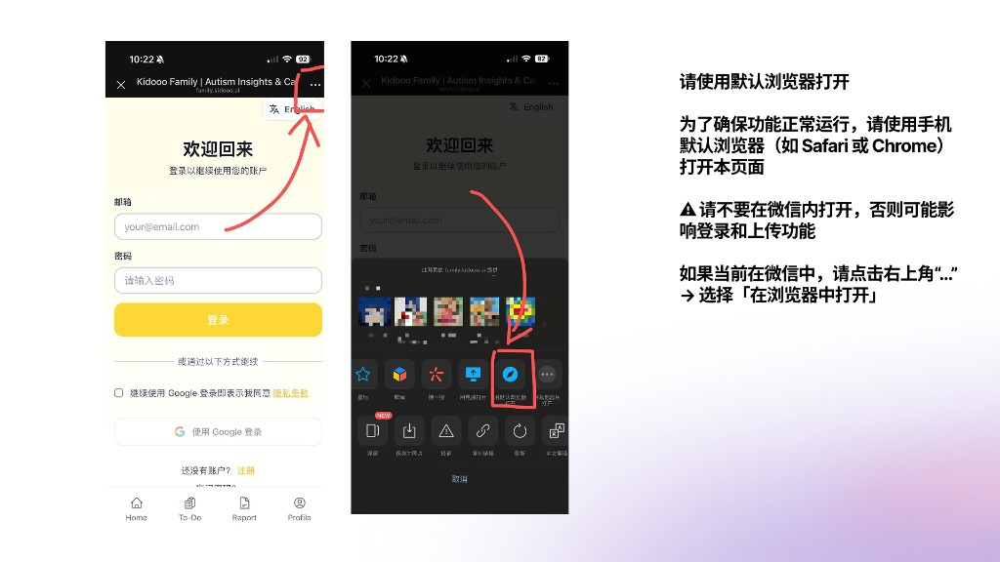
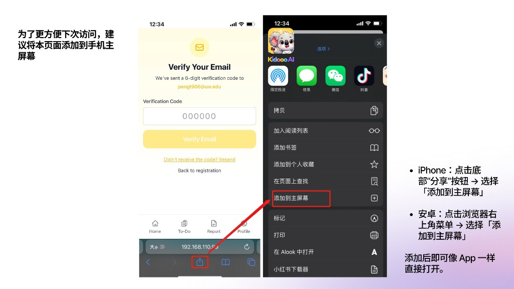
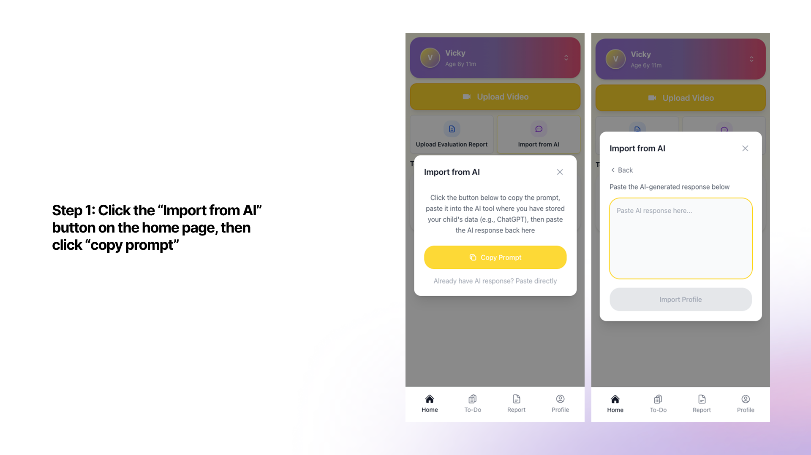
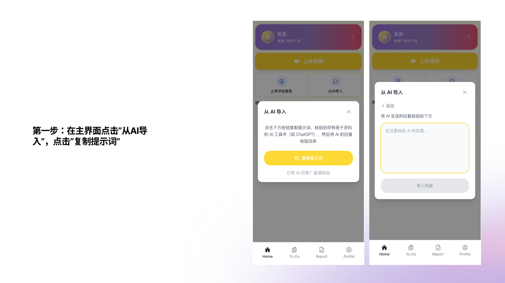
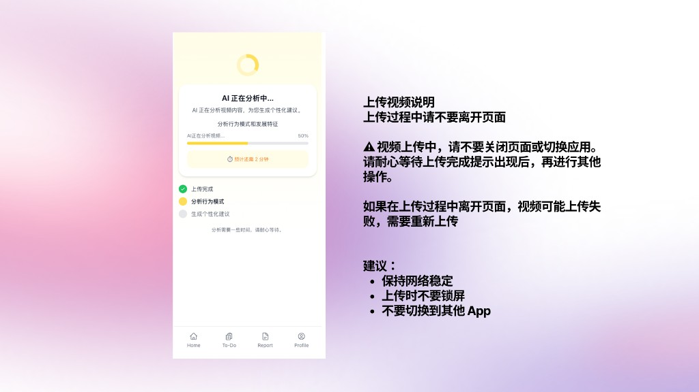
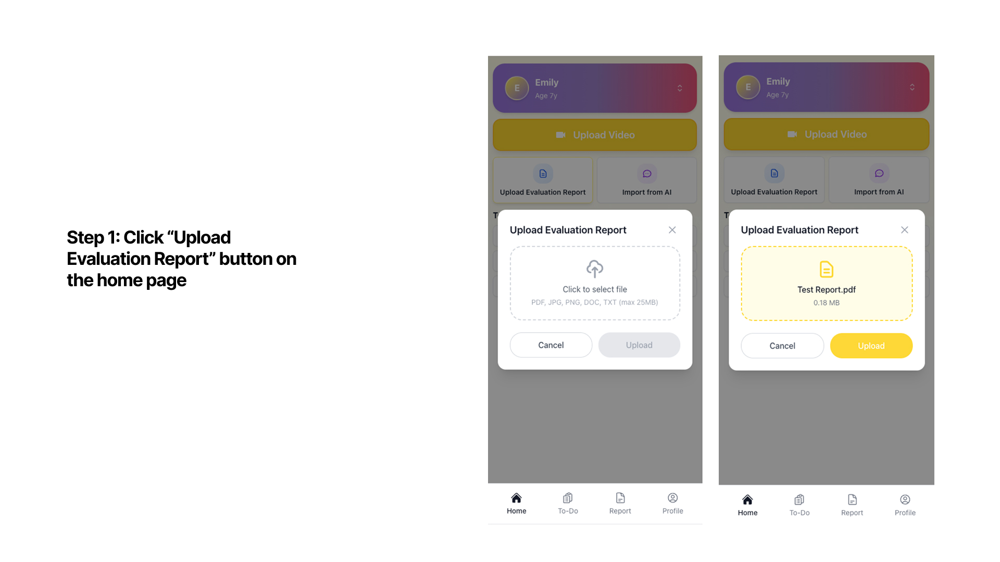
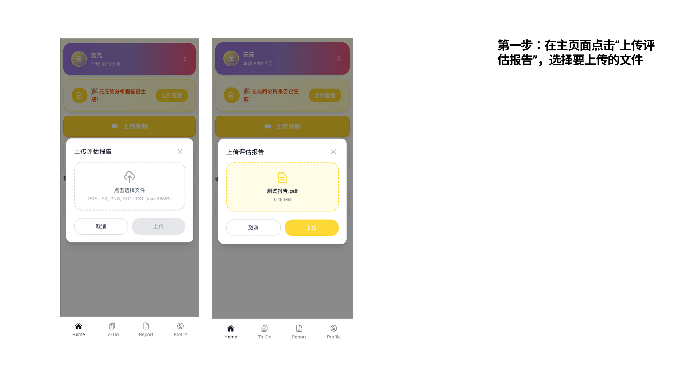
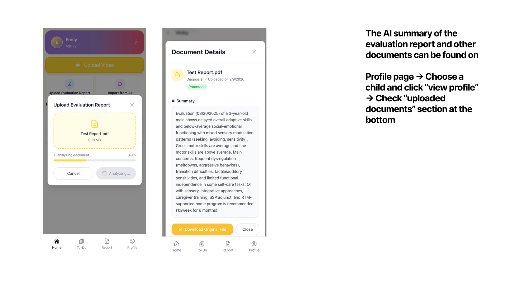
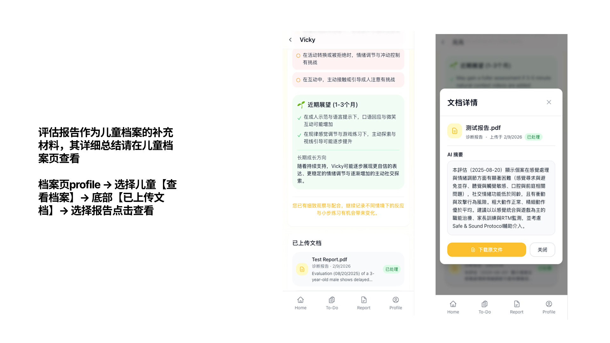

Everything you need to start recording, understanding, and acting on moments that matter — right from home.
Follow these steps to get your first AI summary in minutes.
Sign up at family.kidooo.ai with your email or Google account.

Tap "Add Your Child", enter their name and birth date. This creates a dedicated profile for AI insights and uploaded reports.

Tap "Import from AI" → "Copy Prompt", paste it into ChatGPT and fill in your child's background, then paste the AI's response back to build their profile instantly.


Capture any real moment — mealtimes, transitions, playtime, or any behavior you're wondering about. No special equipment or perfect lighting needed.
Tap Upload Video on the home screen, select your clip, and tap Upload to send it for AI analysis.

Tap "Upload Evaluation Report" to upload any IEP, OT, or speech evaluation. The AI generates a plain-language summary.


Once ready, the report shows a clear snapshot of your child's behaviors, communication, emotional regulation, and suggested next steps — all in plain language.


After the report, scroll to "Key Actions" and tap "+ Add to My To-Dos" to save strategies and track your progress.